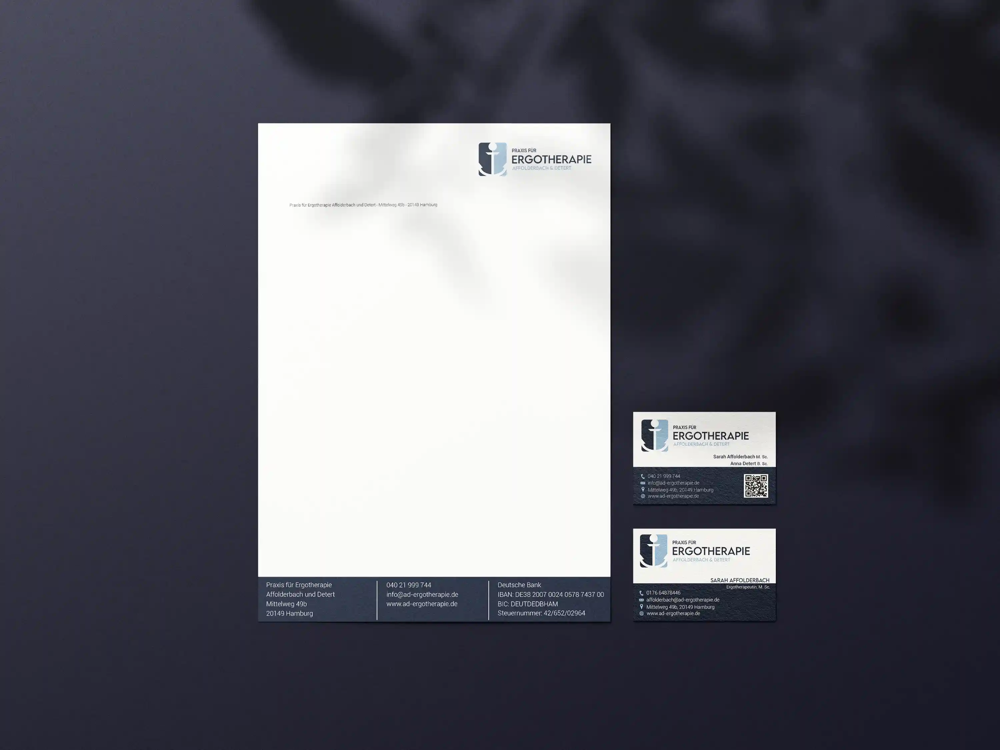
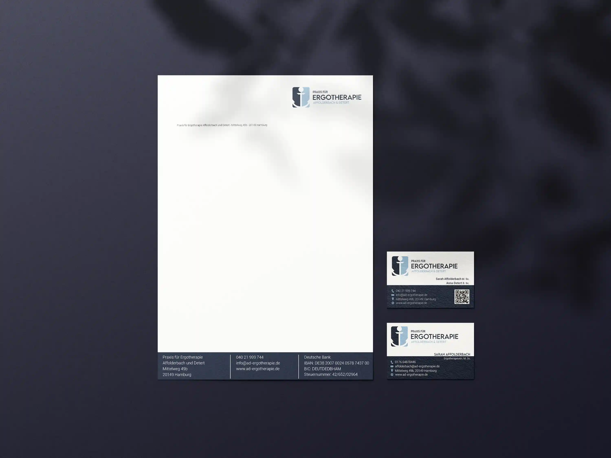

Ich habe mit ruhigen Farben, klaren Formen und einer modernen Typografie gearbeitet. Das Design umfasst Briefpapier, Visitenkarten und digitale Anwendungen.
- Adobe Illustrator Adobe InDesign
- Farbwelt: Blau & Weiß

Praxis für Ergotherapie Affolderbach und Detert
Für die Praxis für Ergotherapie Affolderbach und Detert habe ich ein neues Corporate Design entwickelt. Ziel war es, eine klare und vertrauensvolle Gestaltung zu schaffen, die Professionalität ausstrahlt und Patienten anspricht.
Ich habe mit ruhigen Farben, klaren Formen und einer modernen Typografie gearbeitet. Das Design umfasst Briefpapier, Visitenkarten und digitale Anwendungen.
 Corporate Design Fiktive Firma (Uni Projekt)

Fotografien
Corporate Design Fiktive Firma (Uni Projekt)

Fotografien